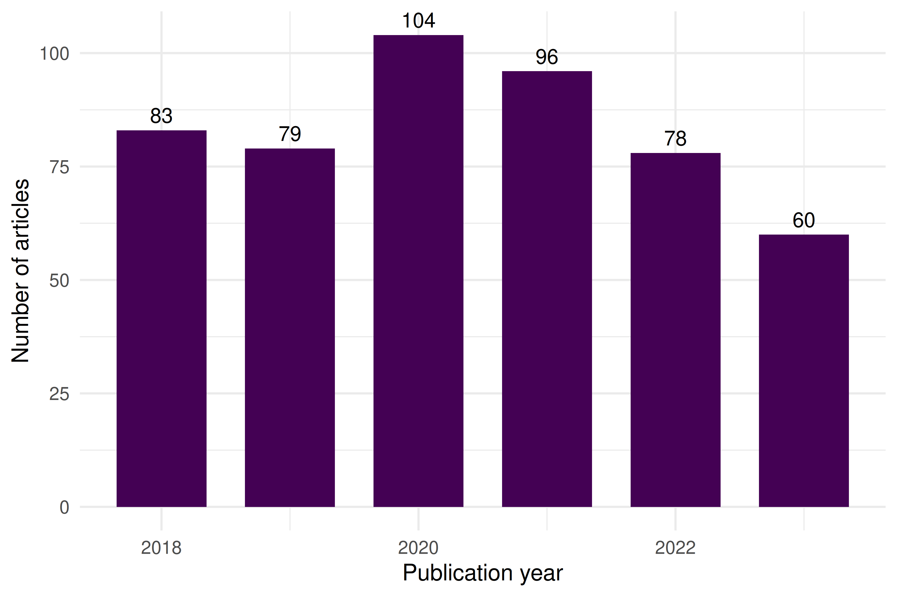

10 Descriptive Bibliometrics
10.1 Learning objectives
After completing this chapter, you will be able to:
- Import bibliographic data into bibliometrix using
convert2df - Produce a corpus-level summary with
biblioAnalysisandsummary - Identify the most productive authors, sources, and countries in a dataset
- Construct and interpret a three-field plot (Sankey diagram)
- Explain when to use the interactive biblioshiny app versus a scripted workflow
- Recognise the descriptive statistics that should precede any advanced analysis
10.3 Conceptual background
Before computing any advanced indicator, a responsible bibliometric study begins with descriptive analysis: understanding the size, growth, and composition of the corpus. How many documents per year? Which journals dominate? Which countries contribute? These questions set the stage for every subsequent method.
The bibliometrix package (Aria and Cuccurullo 2017) provides an integrated R workflow for science mapping. Its companion web app, biblioshiny, wraps the same functions in a point-and-click interface — useful for exploration but not for reproducible reporting. In a Quarto pipeline, we prefer scripted calls so that every number is traceable to code.
Bibliometrix accepts data from Scopus, Web of Science, Dimensions, PubMed, and OpenAlex. The convert2df() function normalises heterogeneous export formats into a common data frame. The biblioAnalysis() function then computes a battery of descriptive statistics in one call: annual production, author productivity, source rankings, country output, and keyword frequencies.
Three classical bibliometric laws underpin this descriptive stage. Lotka’s law (Lotka 1926) describes the inverse-square relationship between the number of authors and their publication counts. Bradford’s law (Bradford 1934) models how articles on a subject scatter across journals, identifying core, mid-range, and peripheral zones. Price’s law (Solla Price 1963) states that half of all contributions come from the square root of the total number of contributors. These empirical regularities provide benchmarks against which any corpus can be compared.
Descriptive bibliometrics also serves a data-quality role. Anomalous spikes in annual output may signal duplicate records; a suspiciously dominant country may indicate a search query biased toward a specific language. Inspecting descriptive statistics is the first line of defence against analytical errors.
10.4 Worked example
10.4.1 Acquiring the data
We fetch a sample of works from the Scientometrics journal via OpenAlex and convert the result into a bibliometrix-compatible data frame.
works <- oa_fetch(
entity = "works",
primary_location.source.id = "S148561398",
from_publication_date = "2018-01-01",
to_publication_date = "2023-12-31",
options = list(sample = 500, seed = 42)
)
nrow(works)#> [1] 50010.4.2 Converting to bibliometrix format
bib_df <- oa2bibliometrix(works)
cat(glue("Records: {nrow(bib_df)}\n"))#> Records: 500#> Fields: 6110.4.3 Running biblioAnalysis
results <- tryCatch(
biblioAnalysis(bib_df, sep = ";"),
error = function(e) {
cat("Note: biblioAnalysis() encountered an error with this data format.\n")
cat("This is a known compatibility issue between bibliometrix and openalexR v3.\n")
NULL
}
)
if (!is.null(results)) {
summary_out <- summary(results, k = 10, verbose = FALSE)
}10.4.4 Annual scientific production
annual <- works |>
mutate(year = year(publication_date)) |>
count(year)
ggplot(annual, aes(x = year, y = n)) +
geom_col(fill = palette_sci(1), width = 0.7) +
geom_text(aes(label = n), vjust = -0.5, size = 3.5) +
labs(x = "Publication year", y = "Number of articles") +
theme_sci()
Figure 10.1: Annual scientific production in the sampled corpus (2018-2023).
10.4.6 Most productive sources
Because all sampled works come from a single journal in this example, we instead show the most frequent cited sources from the references.
top_sources <- works |>
select(id, referenced_works) |>
unnest(referenced_works) |>
count(referenced_works, sort = TRUE) |>
head(10)
cat(glue("Top 10 most-cited reference work IDs:\n"))#> Top 10 most-cited reference work IDs:
print(top_sources)#> # A tibble: 10 × 2
#> referenced_works n
#> <chr> <int>
#> 1 https://openalex.org/W4285719527 53
#> 2 https://openalex.org/W2128438887 47
#> 3 https://openalex.org/W2037925493 27
#> 4 https://openalex.org/W4254947497 26
#> 5 https://openalex.org/W767067438 26
#> 6 https://openalex.org/W2150220236 23
#> 7 https://openalex.org/W2068452509 21
#> 8 https://openalex.org/W2122831750 18
#> 9 https://openalex.org/W1546171873 17
#> 10 https://openalex.org/W2019753053 1610.4.7 Three-field plot
The three-field plot (Sankey diagram) links authors, keywords, and sources. It is a signature visualisation in bibliometrix.
tryCatch(
threeFieldsPlot(bib_df, fields = c("AU", "DE", "SO_SO"), n = c(8, 8, 8)),
error = function(e) cat("Three-field plot skipped due to data format incompatibility.\n")
)#> Three-field plot skipped due to data format incompatibility.10.5 Diagnostics and interpretation
When reviewing descriptive output, check the following:
- Completeness: Are there gaps in yearly coverage that indicate missing data rather than genuine drops?
- Author name variants: The same person appearing under different name forms inflates author counts. OpenAlex’s entity resolution helps, but manual inspection remains essential.
- Lotka’s law fit: If the author productivity distribution deviates markedly from an inverse-square law, the corpus may be too small or too specialised.
- Bradford zones: In a multi-journal corpus, check whether a small core of journals accounts for roughly one-third of all articles, as Bradford’s law predicts.
10.7 Limitations and responsible use
- Descriptive statistics are not evaluative. The most productive author is not necessarily the most impactful. Publication counts say nothing about quality (Hicks et al. 2015).
- Sample bias. A random sample from OpenAlex may not represent the full population. Always report how the sample was drawn and its size relative to the universe.
- Language and database coverage. OpenAlex has broader coverage than WoS or Scopus, but still underrepresents non-English-language research and certain disciplines (Visser et al. 2021).
- Name disambiguation. Despite algorithmic clustering, author and institutional names can still be conflated or split. Treat productivity rankings as approximate.
10.9 Common pitfalls
- Skipping descriptive analysis. Jumping straight to network or topic analysis without understanding the corpus structure often leads to misinterpretation.
- Treating biblioshiny output as final. The interactive app is excellent for exploration, but its figures are not reproducible. Always script the final analysis.
-
Ignoring duplicate records. Bibliographic exports often contain duplicates. Use
dedupe_by_doi()or similar checks before computing any statistics. - Comparing raw counts across time windows of different length. Counting publications in a 6-year window is not comparable to a 3-year window without normalisation.
10.10 Exercises
Lotka’s law. Using the author productivity data from this chapter, fit Lotka’s inverse-square law with
bibliometrix::lotka(). Does the observed distribution follow the theoretical prediction? (Hint: plot observed vs. expected proportions.)Bradford’s law. Fetch works from a broad topic (e.g., “machine learning”) across multiple journals. Apply
bibliometrix::bradford()to identify the core, mid-range, and peripheral journal zones. How many journals form the core zone?Three-field exploration. Modify the three-field plot to use author countries instead of author names as the left field (use
"AU_CO"if available). What new patterns emerge?Annual growth rate. Compute the compound annual growth rate (CAGR) of publications in the sample. Is the field accelerating?
10.11 Solutions
Solutions are provided in 2.11.
10.12 Further reading
- Aria and Cuccurullo (2017) — The bibliometrix package paper; describes the full workflow and all available functions.
- Lotka (1926) — The original frequency distribution of scientific productivity.
- Bradford (1934) — Bradford’s law of scattering: how articles distribute across journals.
- Solla Price (1963) — Little Science, Big Science; foundational work on the growth of science.
- Hicks et al. (2015) — The Leiden Manifesto; a reminder that descriptive counts are not evaluations.
- Visser et al. (2021) — Comparison of bibliographic databases; important context for coverage limitations.
10.13 Session info
#> R version 4.4.1 (2024-06-14)
#> Platform: x86_64-pc-linux-gnu
#> Running under: Ubuntu 24.04.4 LTS
#>
#> Matrix products: default
#> BLAS: /usr/lib/x86_64-linux-gnu/openblas-pthread/libblas.so.3
#> LAPACK: /usr/lib/x86_64-linux-gnu/openblas-pthread/libopenblasp-r0.3.26.so; LAPACK version 3.12.0
#>
#> locale:
#> [1] LC_CTYPE=C.UTF-8 LC_NUMERIC=C LC_TIME=C.UTF-8 LC_COLLATE=C.UTF-8 LC_MONETARY=C.UTF-8
#> [6] LC_MESSAGES=C.UTF-8 LC_PAPER=C.UTF-8 LC_NAME=C LC_ADDRESS=C LC_TELEPHONE=C
#> [11] LC_MEASUREMENT=C.UTF-8 LC_IDENTIFICATION=C
#>
#> time zone: UTC
#> tzcode source: system (glibc)
#>
#> attached base packages:
#> [1] stats graphics grDevices utils datasets methods base
#>
#> other attached packages:
#> [1] quanteda_4.4 pdftools_3.8.0 arrow_24.0.0 bibliometrix_5.3.0 RefManageR_1.4.0 bib2df_1.1.2.0
#> [7] rcrossref_1.2.1 gt_1.3.0 tidytext_0.4.3 glue_1.8.1 openalexR_3.0.1 lubridate_1.9.5
#> [13] forcats_1.0.1 stringr_1.6.0 dplyr_1.2.1 purrr_1.2.2 readr_2.2.0 tidyr_1.3.2
#> [19] tibble_3.3.1 ggplot2_4.0.3 tidyverse_2.0.0
#>
#> loaded via a namespace (and not attached):
#> [1] bibtex_0.5.2 RColorBrewer_1.1-3 rstudioapi_0.18.0 jsonlite_2.0.0 magrittr_2.0.5
#> [6] farver_2.1.2 rmarkdown_2.31 fs_2.1.0 vctrs_0.7.3 memoise_2.0.1
#> [11] askpass_1.2.1 base64enc_0.1-6 htmltools_0.5.9 contentanalysis_1.0.0 curl_7.1.0
#> [16] janeaustenr_1.0.0 cellranger_1.1.0 sass_0.4.10 bslib_0.10.0 htmlwidgets_1.6.4
#> [21] tokenizers_0.3.0 plyr_1.8.9 httr2_1.2.2 plotly_4.12.0 cachem_1.1.0
#> [26] dimensionsR_0.0.3 igraph_2.3.1 mime_0.13 lifecycle_1.0.5 pkgconfig_2.0.3
#> [31] Matrix_1.7-0 R6_2.6.1 fastmap_1.2.0 shiny_1.13.0 digest_0.6.39
#> [36] shinycssloaders_1.1.0 rprojroot_2.1.1 SnowballC_0.7.1 labeling_0.4.3 urltools_1.7.3.1
#> [41] timechange_0.4.0 httr_1.4.8 compiler_4.4.1 here_1.0.2 bit64_4.8.0
#> [46] withr_3.0.2 S7_0.2.2 backports_1.5.1 viridis_0.6.5 rappdirs_0.3.4
#> [51] bibliometrixData_0.3.0 tools_4.4.1 otel_0.2.0 stopwords_2.3 zip_2.3.3
#> [56] httpuv_1.6.17 rentrez_1.2.4 promises_1.5.0 grid_4.4.1 stringdist_0.9.17
#> [61] generics_0.1.4 gtable_0.3.6 tzdb_0.5.0 rscopus_0.9.0 ca_0.71.1
#> [66] data.table_1.18.4 hms_1.1.4 xml2_1.5.2 utf8_1.2.6 ggrepel_0.9.8
#> [71] pillar_1.11.1 later_1.4.8 brand.yml_0.1.0 lattice_0.22-6 bit_4.6.0
#> [76] tidyselect_1.2.1 miniUI_0.1.2 downlit_0.4.5 knitr_1.51 gridExtra_2.3
#> [81] bookdown_0.46 crul_1.6.0 xfun_0.57 DT_0.34.0 humaniformat_0.6.0
#> [86] visNetwork_2.1.4 stringi_1.8.7 lazyeval_0.2.3 qpdf_1.4.1 yaml_2.3.12
#> [91] evaluate_1.0.5 codetools_0.2-20 httpcode_0.3.0 cli_3.6.6 xtable_1.8-8
#> [96] jquerylib_0.1.4 dichromat_2.0-0.1 Rcpp_1.1.1-1.1 readxl_1.4.5 triebeard_0.4.1
#> [101] XML_3.99-0.23 parallel_4.4.1 assertthat_0.2.1 pubmedR_1.0.2 viridisLite_0.4.3
#> [106] scales_1.4.0 openxlsx_4.2.8.1 rlang_1.2.0 fastmatch_1.1-8